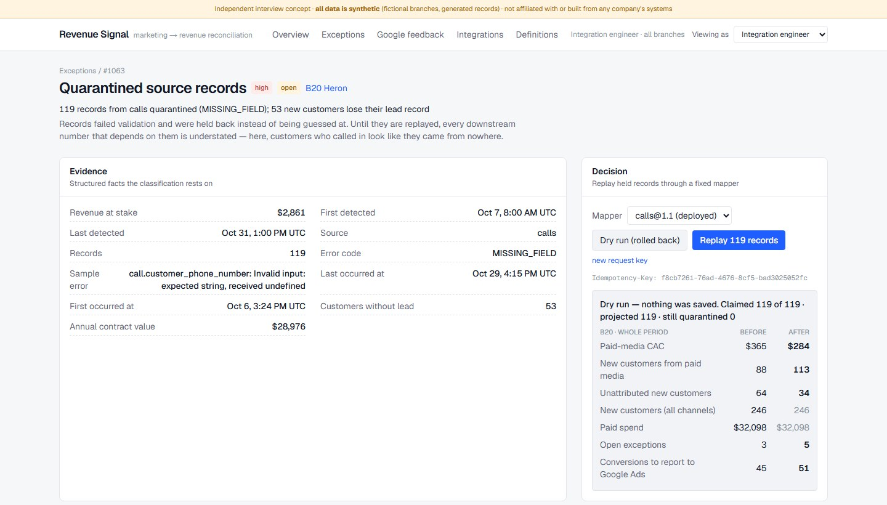
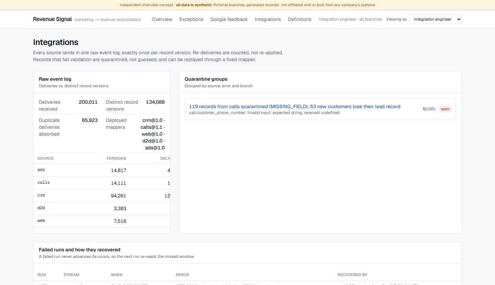

I built a working layer that finds the disagreement record by record, fixes it safely, and proves the number changed. Nobody asked me to. I wanted to show how I would approach the job before we talk.
Spend at this branch was steady. Leads were steady. What changed is that from the week of October 12, most new customers stopped matching any marketing source.
Customer behaviour does not change like that in a week. Measurement does.
A marketer looking only at the dashboard would cut this branch's budget. This chart is the reason a reconciliation layer has to work at the level of single records, not totals.
Toggle "After the fix" above to redraw this chart from the replayed data.
The phone number moved from customer_phone_number to caller.number. The old mapper rejected every new call. That join between a tracked call and a CRM customer is the one no vendor provides, so losing it erases the marketing source of every customer the call brought in.
Nothing was dropped. Each call was stored as received, with its error, and held aside. Phone numbers are hashed before anything is stored.
Mapper 1.1 reads both shapes. The fix runs against the stored records, never against the source again.
| Step | Records | Result |
|---|
| Branch , October | Before | After |
|---|
The fix also surfaced three new problems. Three customers had called from a paid ad, then signed with a door-to-door rep. While the calls were held, nobody could see that a commission and a click were both being counted as the reason for one sale.
That is the point of the design. A repair that makes every warning disappear is suspicious. A repair that tells you something new is evidence it reconnected real records.
Only conversions that reconcile go back to Google Ads. The ones with a door-to-door conflict are held for a person to decide. This step is a dry run: nothing is sent.
Most of the gap between what ad platforms claim and what the CRM shows is normal: duplicates, existing customers, people who did not buy. Every step is a count from the database, each prospect lands in exactly one bucket, and a test checks they add up.

